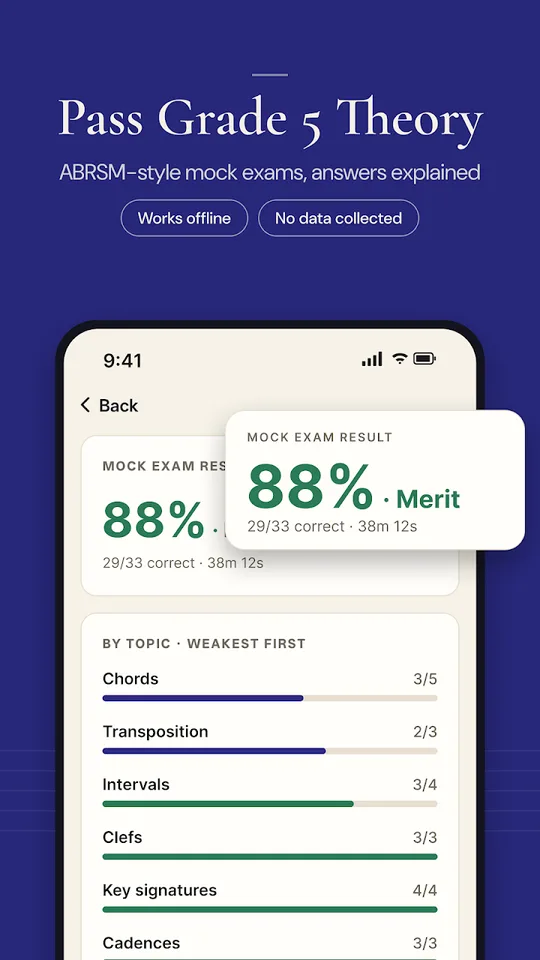
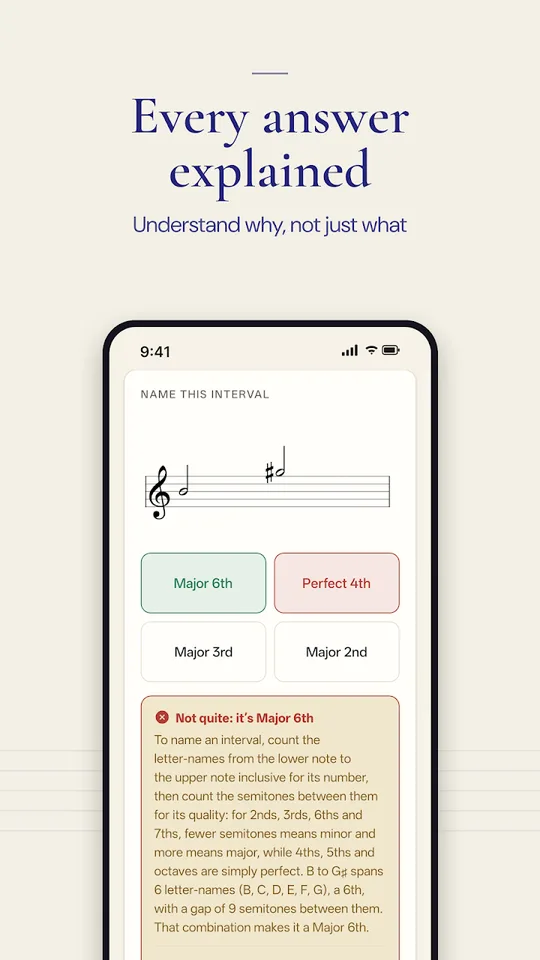
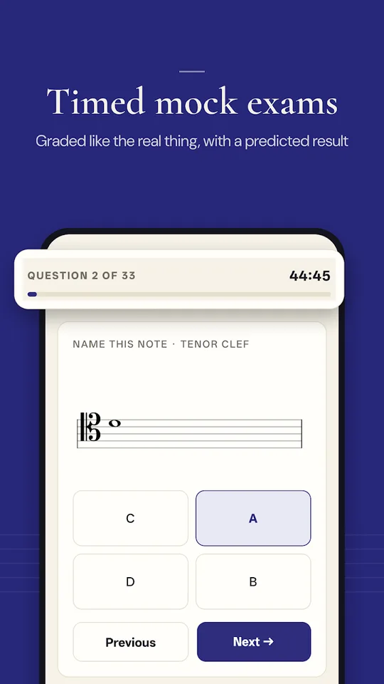
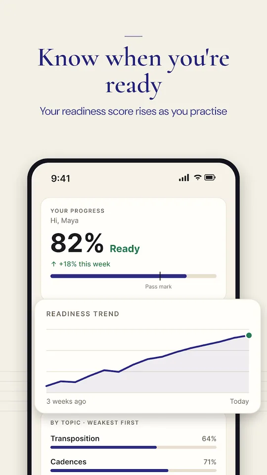
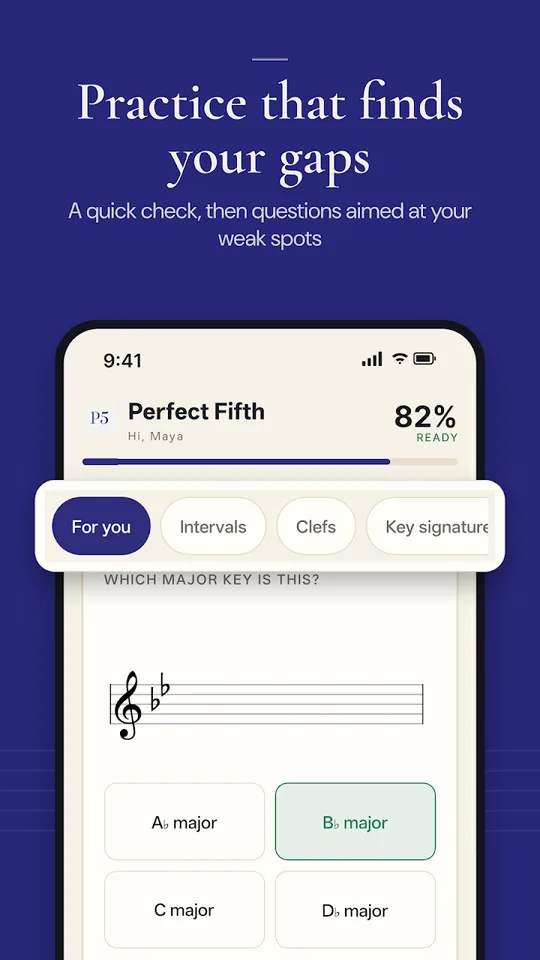
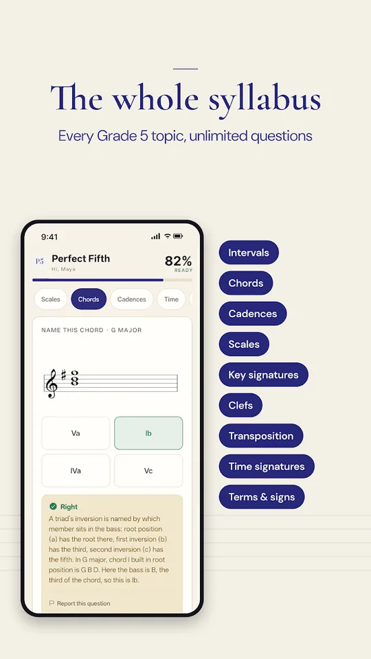
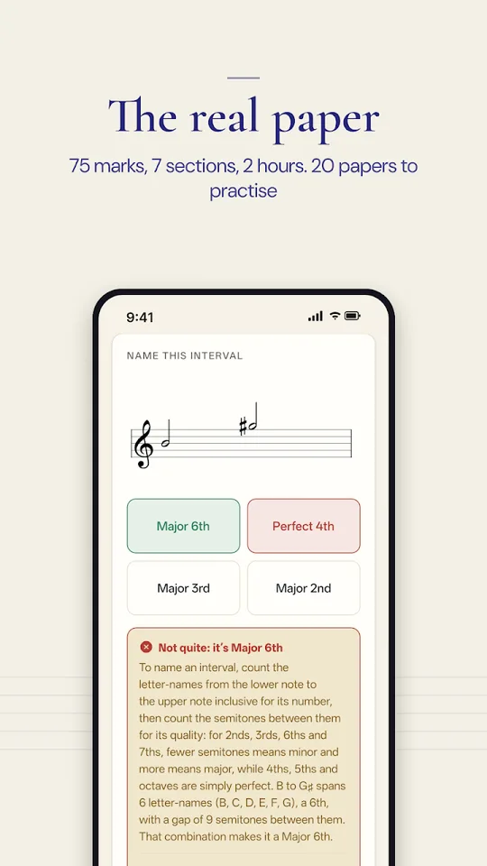

Music Theory Grade 5 Exam Prep
Perfect Fifth
Grade 5 music theory practice that works like the real exam.
A free music theory app built around 20 full mock exam papers in the real 75-mark format, questions set on real music, and an explanation for every answer. It covers the complete Grade 5 syllabus for the ABRSM music theory exam.
- Free
- Android
- Works offline
- No sign-up
- Rated Everyone

See it in action
Screens from the app.






What you get
Everything for the Grade 5 music theory exam, in one free app.
Mock papers in the real format
20 complete practice papers: 7 sections, 75 marks, a 2-hour timer. Marks broken down section by section, and a predicted result.
An explanation for every answer
Every question tells you why the answer is right, not just what it was. Get an interval wrong and you get the method for counting it.
Music in context
Theory questions set on real piano extracts by Bach, Mozart, Haydn and others, the way the exam does it.
The full Grade 5 syllabus
Rhythm and time signatures, clefs including alto and tenor, keys, intervals, chords, cadences, transposition, ornaments, and musical terms.
Hear it
Play intervals, chords, scales and cadences as audio: useful ear training alongside the written work.
Practice that adapts to you
A quick check on where you are, then sets of 10 aimed at your weakest topics. A readiness score tells you when you are actually ready.
Who it is for
Students preparing for the Grade 5 music theory exam
Anyone who needs Grade 5 theory before Grade 6 and above practical exams
Music teachers looking for theory tests and practice papers to set
Self-taught musicians who want to learn music theory properly
Ready to practise?
Free, works offline, no account. Occasional ads appear between practice sets, never during a mock exam or an individual question.
Get it on Google Play